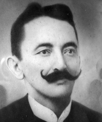

Luiz Leite Ribeiro (1859–1928) nasceu em Porto Nacional e foi um dos pioneiros na defesa do norte goiano. Fundador dos jornais Folha do Norte e O Incentivo, atuou como secretário da Câmara, delegado de polícia, promotor público e vice-presidente da Intendência Municipal de Porto Nacional.
Em 1891, foi eleito deputado constituinte, assinando a Constituição daquele ano. Também exerceu a advocacia e foi deputado estadual em 1900. Luiz Leite Ribeiro faleceu aos 69 anos em Conceição do Norte, deixando um legado importante na história do Tocantins.
